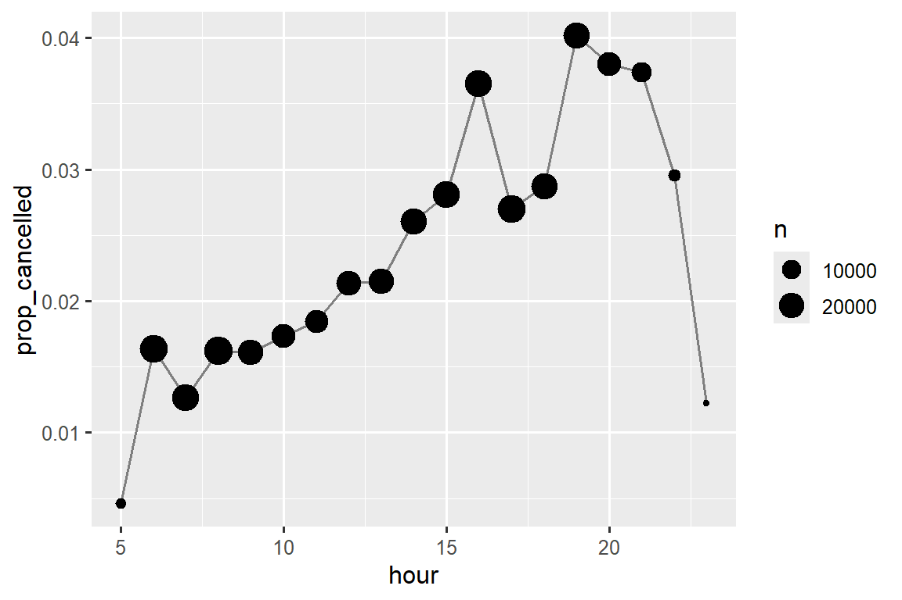
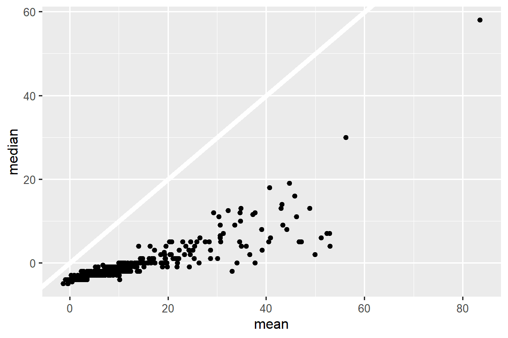
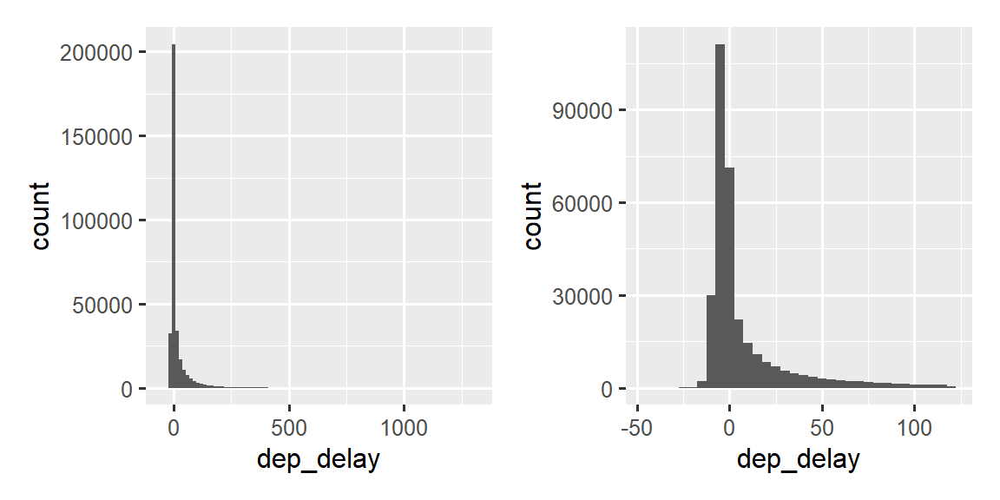
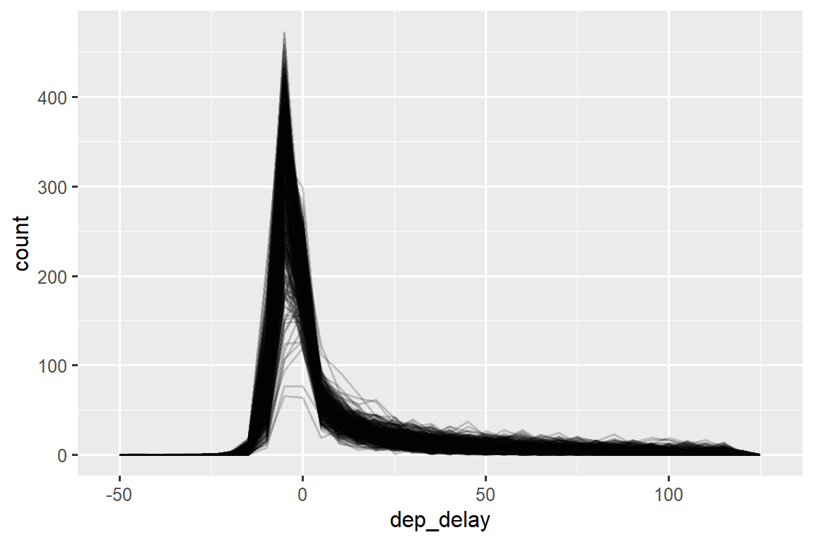

library(tidyverse)
library(nycflights13)벡터: 숫자
숫자형 벡터(numeric vectors)는 데이터 과학의 중추(backbone)이며, 여러분은 이 책의 앞부분에서 이미 여러 번 사용해 보았습니다. 이제 R에서 숫자로 할 수 있는 작업을 체계적으로 조사(survey)하여 숫자형 벡터와 관련된 향후 문제에 대처(tackle)할 수 있는 좋은 위치(well situated)에 서게 될 때입니다.
문자열이 있을 때 숫자를 만드는 몇 가지 도구를 제공하는 것으로 시작한 다음, count()에 대해 조금 더 자세히 알아보겠습니다. 그런 다음 다른 유형의 벡터에도 적용할 수 있지만 숫자형 벡터에 자주 사용되는 보다 일반적인 변환(transformations)을 포함하여 mutate()와 잘 어울리는(pair well) 다양한 숫자 변환에 대해 깊이 알아볼(dive into) 것입니다. 마지막으로 summarize()와 잘 어울리는 요약(summary) 함수들을 다루고 이들이 mutate()와 어떻게 사용될 수 있는지 보여주며 마무리하겠습니다.
1 숫자 만들기
대부분의 경우 이미 R의 숫자 유형 중 하나인 정수(integer) 또는 배정도 실수(double)로 기록된 숫자를 얻게 됩니다. 그러나 열 머리글(column headers)에서 피벗하여 생성했거나 데이터 가져오기 프로세스에서 무언가 잘못되어 문자열로 표시되는 경우가 있습니다.
readr은 문자열을 숫자로 파싱하는 데 유용한 두 가지 함수인 parse_double()과 parse_number()를 제공합니다. 문자열로 작성된 숫자가 있을 때 parse_double()을 사용합니다.
x <- c("1.2", "5.6", "1e3")
parse_double(x)
#> [1] 1.2 5.6 1000.0문자열에 무시하고 싶은 숫자가 아닌 텍스트가 포함된 경우 parse_number()를 사용하세요. 이것은 통화(currency) 데이터와 백분율에 특히 유용합니다.
x <- c("$1,234", "USD 3,513", "59%")
parse_number(x)
#> [1] 1234 3513 592 개수 세기
개수 세기(counts)와 약간의 기본 산술만으로 얼마나 많은 데이터 과학을 할 수 있는지 놀랍기 때문에 dplyr은 count()를 사용하여 개수를 세는 것을 가능한 한 쉽게 만들기 위해 노력(strives)합니다. 이 함수는 분석 중 빠른 탐색(quick exploration) 및 검사(checks)에 매우 좋습니다.
flights |> count(dest)
#> # A tibble: 105 × 2
#> dest n
#> <chr> <int>
#> 1 ABQ 254
#> 2 ACK 265
#> 3 ALB 439
#> 4 ANC 8
#> 5 ATL 17215
#> 6 AUS 2439
#> # ℹ 99 more rows우리는 일반적으로 계산이 예상대로 작동하는지 빠르게 확인하기 위해 콘솔에서 자주 사용하기 때문에 보통 한 줄에 count()를 넣습니다. 흔한 값을 보고 싶다면 sort = TRUE를 추가하세요.
flights |> count(dest, sort = TRUE)
#> # A tibble: 105 × 2
#> dest n
#> <chr> <int>
#> 1 ORD 17283
#> 2 ATL 17215
#> 3 LAX 16174
#> 4 BOS 15508
#> 5 MCO 14082
#> 6 CLT 14064
#> # ℹ 99 more rows모든 값을 보고 싶다면 |> View() 또는 |> print(n = Inf)를 사용할 수 있다는 것을 기억하세요.
group_by(), summarize(), n()을 사용하여 동일한 계산을 “수동으로(by hand)” 수행할 수 있습니다. 이것은 동시에 다른 요약(summaries)을 계산할 수 있게 해주기 때문에 유용합니다.
flights |>
group_by(dest) |>
summarize(
n = n(),
delay = mean(arr_delay, na.rm = TRUE)
)
#> # A tibble: 105 × 3
#> dest n delay
#> <chr> <int> <dbl>
#> 1 ABQ 254 4.38
#> 2 ACK 265 4.85
#> 3 ALB 439 14.4
#> 4 ANC 8 -2.5
#> 5 ATL 17215 11.3
#> 6 AUS 2439 6.02
#> # ℹ 99 more rowsn()은 아무런 인자도 취하지 않고 대신 “현재(current)” 그룹에 대한 정보에 접근하는 특별한 요약 함수입니다. 이것은 오직 dplyr 동사(verbs) 내부에서만 작동한다는 것을 의미합니다.
n()
#> Error in `n()`:
#> ! Must only be used inside data-masking verbs like `mutate()`,
#> `filter()`, and `group_by()`.유용하게 사용할 수 있는 n() 및 count()의 몇 가지 변형(variants)이 있습니다.
n_distinct(x)는 하나 이상의 변수에서 뚜렷하게 구분되는(distinct) (고유한(unique)) 값의 개수를 셉니다. 예를 들어 많은 항공사(carriers)가 서비스하는 목적지가 어디인지 알아낼 수 있습니다.
flights |>
group_by(dest) |>
summarize(carriers = n_distinct(carrier)) |>
arrange(desc(carriers))
#> # A tibble: 105 × 2
#> dest carriers
#> <chr> <int>
#> 1 ATL 7
#> 2 BOS 7
#> 3 CLT 7
#> 4 ORD 7
#> 5 TPA 7
#> 6 AUS 6
#> # ℹ 99 more rows- 가중 카운트(weighted count)는 합계(sum)입니다. 예를 들어 각 비행기가 비행한 마일(miles) 수를 “세어볼(count)” 수 있습니다.
flights |>
group_by(tailnum) |>
summarize(miles = sum(distance))
#> # A tibble: 4,044 × 2
#> tailnum miles
#> <chr> <dbl>
#> 1 D942DN 3418
#> 2 N0EGMQ 250866
#> 3 N10156 115966
#> 4 N102UW 25722
#> 5 N103US 24619
#> 6 N104UW 25157
#> # ℹ 4,038 more rows- 가중 카운트는 일반적인 문제이므로
count()에는 동일한 작업을 수행하는wt인수가 있습니다.
flights |> count(tailnum, wt = distance)sum()과is.na()를 결합하여 결측값의 개수를 셀 수 있습니다.flights데이터셋에서 이것은 취소된 비행편을 나타냅니다.
flights |>
group_by(dest) |>
summarize(n_cancelled = sum(is.na(dep_time)))
#> # A tibble: 105 × 2
#> dest n_cancelled
#> <chr> <int>
#> 1 ABQ 0
#> 2 ACK 0
#> 3 ALB 20
#> 4 ANC 0
#> 5 ATL 317
#> 6 AUS 21
#> # ℹ 99 more rows2.1 연습 문제
특정 변수에 대해 결측값이 있는 행의 수를 세기 위해
count()를 어떻게 사용할 수 있습니까?count()에 대한 다음 호출(calls)을 대신group_by(),summarize(),arrange()를 사용하도록 확장(Expand)하세요.
flights |> count(dest, sort = TRUE)
flights |> count(tailnum, wt = distance)3 숫자 변환
변환 함수(Transformation functions)는 출력이 입력과 길이가 동일하기 때문에 mutate()와 잘 작동합니다. 대부분의(The vast majority of) 변환 함수는 이미 기본 R에 내장되어 있습니다. 이 모든 것을 나열하는 것은 비현실적이므로(impractical) 이 섹션에서는 유용한 것을 보여줄 것입니다. 예를 들어 R은 여러분이 꿈꿀 수 있는 모든 삼각 함수(trigonometric functions)를 제공하지만, 데이터 과학에서는 거의 필요하지 않기 때문에 여기에 나열하지 않습니다.
3.1 산술 및 재활용 규칙
우리는 산술(+, -, *, /, ^)의 기초를 소개했고 그 이후로 많이 사용해 왔습니다. 이 함수들은 여러분이 초등학교(grade school)에서 배운 것을 수행하기 때문에 많은 설명이 필요하지 않습니다. 그러나 우리는 좌변(left)과 우변(right)의 길이가 다를 때 어떤 일이 일어나는지를 결정하는 재활용 규칙(recycling rules)에 대해 간단히 이야기할 필요가 있습니다. 이것은 flights |> mutate(air_time = air_time / 60)과 같은 연산에 중요한데, 왜냐하면 /의 왼쪽에는 336,776개의 숫자가 있지만 오른쪽에는 하나만 있기 때문입니다.
R은 짧은 벡터를 재활용(recycling), 즉 반복(repeating)하여 불일치하는 길이(mismatched lengths)를 처리합니다. 데이터 프레임 외부에 몇 개의 벡터를 만들면 이러한 작동을 더 쉽게 볼 수 있습니다.
x <- c(1, 2, 10, 20)
x / 5
#> [1] 0.2 0.4 2.0 4.0
# is shorthand for
x / c(5, 5, 5, 5)
#> [1] 0.2 0.4 2.0 4.0일반적으로 단일 숫자(즉, 길이 1의 벡터)만 재활용하고 싶겠지만, R은 더 짧은 길이의 벡터라면 무엇이든 재활용합니다. 더 긴 벡터가 더 짧은 벡터의 배수(multiple)가 아닌 경우 일반적으로(항상은 아니지만) 경고(warning)를 표시합니다.
x * c(1, 2)
#> [1] 1 4 10 40
x * c(1, 2, 3)
#> Warning in x * c(1, 2, 3): longer object length is not a multiple of shorter
#> object length
#> [1] 1 4 30 20이러한 재활용 규칙은 논리 비교(==, <, <=, >, >=, !=)에도 적용되며 실수로 %in% 대신 ==를 사용하고 데이터 프레임의 행 수가 불행한 수(unfortunate number of rows)인 경우 놀라운 결과로 이어질 수 있습니다. 예를 들어 1월과 2월의 모든 비행편을 찾으려는 다음 코드를 살펴보세요.
flights |>
filter(month == c(1, 2))
#> # A tibble: 25,977 × 19
#> year month day dep_time sched_dep_time dep_delay arr_time sched_arr_time
#> <int> <int> <int> <int> <int> <dbl> <int> <int>
#> 1 2013 1 1 517 515 2 830 819
#> 2 2013 1 1 542 540 2 923 850
#> 3 2013 1 1 554 600 -6 812 837
#> 4 2013 1 1 555 600 -5 913 854
#> 5 2013 1 1 557 600 -3 838 846
#> 6 2013 1 1 558 600 -2 849 851
#> # ℹ 25,971 more rows
#> # ℹ 11 more variables: arr_delay <dbl>, carrier <chr>, flight <int>, …코드는 오류 없이 실행되지만 원하는 결과를 반환하지 않습니다. 재활용 규칙 때문에 홀수(odd numbered) 행에서는 1월 출발 비행편을, 짝수(even numbered) 행에서는 2월 출발 비행편을 찾습니다. 그리고 불행하게도 flights의 행 수가 짝수이기 때문에 경고도 없습니다.
이러한 유형의 조용한 실패(silent failure)로부터 여러분을 보호하기 위해 대부분의 tidyverse 함수는 단일 값(single values)만 재활용하는 더 엄격한(stricter) 형태의 재활용을 사용합니다. 불행하게도 여기서나 다른 많은 경우에는 핵심 계산이 filter()가 아닌 기본 R 함수 ==에 의해 수행되기 때문에 그것이 도움이 되지 않습니다.
3.2 최솟값과 최댓값
산술 함수는 쌍으로 이루어진(pairs of) 변수들과 작동합니다. 밀접하게 관련된 두 함수인 pmin()과 pmax()는 두 개 이상의 변수가 주어졌을 때 각 행에서 작거나 큰 값을 반환합니다.
df <- tribble(
~x, ~y,
1, 3,
5, 2,
7, NA,
)
df |>
mutate(
min = pmin(x, y, na.rm = TRUE),
max = pmax(x, y, na.rm = TRUE)
)
#> # A tibble: 3 × 4
#> x y min max
#> <dbl> <dbl> <dbl> <dbl>
#> 1 1 3 1 3
#> 2 5 2 2 5
#> 3 7 NA 7 7이것들은 여러 관측치를 가져와 하나의 값을 반환하는 요약 함수 min() 및 max()와는 다르다는 점에 유의하세요. 모든 최솟값과 모든 최댓값이 동일한 값을 가질 때 여러분이 잘못된 형식을 사용했음을 알 수 있습니다.
df |>
mutate(
min = min(x, y, na.rm = TRUE),
max = max(x, y, na.rm = TRUE)
)
#> # A tibble: 3 × 4
#> x y min max
#> <dbl> <dbl> <dbl> <dbl>
#> 1 1 3 1 7
#> 2 5 2 1 7
#> 3 7 NA 1 73.3 모듈러 산술
모듈러 산술(Modular arithmetic)은 여러분이 소수 자릿수(decimal places)에 대해 배우기 전에 했던 수학의 한 유형, 즉 정수(whole number)와 나머지(remainder)를 산출하는 나눗셈의 기술적인 이름입니다. R에서 %/%는 정수 나눗셈을 수행하고 %%는 나머지를 계산합니다.
1:10 %/% 3
#> [1] 0 0 1 1 1 2 2 2 3 3
1:10 %% 3
#> [1] 1 2 0 1 2 0 1 2 0 1모듈러 산술은 sched_dep_time 변수를 hour와 minute으로 푸는(unpack) 데 사용할 수 있기 때문에 flights 데이터셋에 유용합니다.
flights |>
mutate(
hour = sched_dep_time %/% 100,
minute = sched_dep_time %% 100,
.keep = "used"
)
#> # A tibble: 336,776 × 3
#> sched_dep_time hour minute
#> <int> <dbl> <dbl>
#> 1 515 5 15
#> 2 529 5 29
#> 3 540 5 40
#> 4 545 5 45
#> 5 600 6 0
#> 6 558 5 58
#> # ℹ 336,770 more rows이것을 mean(is.na(x)) 기법과 결합하여 취소된 비행편의 비율이 하루 동안 어떻게 달라지는지(varies) 확인할 수 있습니다.
flights |>
group_by(hour = sched_dep_time %/% 100) |>
summarize(prop_cancelled = mean(is.na(dep_time)), n = n()) |>
filter(hour > 1) |>
ggplot(aes(x = hour, y = prop_cancelled)) +
geom_line(color = "grey50") +
geom_point(aes(size = n))
3.4 로그
로그(Logarithms)는 여러 자릿수(orders of magnitude)에 걸쳐 있는 데이터를 처리하고 지수적(exponential) 성장을 선형(linear) 성장으로 변환하는 데 믿을 수 없을 정도로(incredibly) 유용한 변환입니다. R에서는 log() (자연로그, 밑이 e), log2() (밑이 2), log10() (밑이 10) 세 가지 로그 중에서 선택할 수 있습니다. 우리는 log2() 또는 log10()을 사용할 것을 권장합니다.
log2()는 로그 스케일에서 1의 차이가 원래 스케일에서 두 배가 되는 것에 해당하고 -1의 차이는 절반이 되는 것에 해당하기 때문에 해석하기 쉽습니다. 반면에 log10()은 역변환(back-transform)하기 쉽습니다 (3은 10^3 = 1000). log()의 역함수는 exp()입니다; log2() 또는 log10()의 역함수를 계산하려면 2^ 또는 10^을 사용해야 합니다.
3.5 반올림
숫자를 가까운 정수로 반올림하려면 round(x)를 사용하세요.
round(123.456)
#> [1] 123두 번째 인수 digits로 반올림의 정밀도(precision)를 제어할 수 있습니다. round(x, digits)는 가까운 10^-n으로 반올림하므로 digits = 2는 가까운 0.01로 반올림합니다. 이 정의는 round(x, -3)이 가까운 1000으로 반올림한다는 것을 암시하기 때문에 유용하며, 실제로 그렇게 작동합니다.
round(123.456, 2) # 두 자리 (two digits)
#> [1] 123.46
round(123.456, 1) # 한 자리 (one digit)
#> [1] 123.5
round(123.456, -1) # 가까운 10의 배수로 반올림 (round to nearest ten)
#> [1] 120
round(123.456, -2) # 가까운 100의 배수로 반올림 (round to nearest hundred)
#> [1] 100언뜻 보기에(at first glance) 놀랍게 보이는 round()의 이상한 점(weirdness)이 하나 있습니다.
round(c(1.5, 2.5))
#> [1] 2 2round()는 “짝수 반올림(round half to even)” 또는 은행원 반올림(Banker’s rounding)으로 알려진 것을 사용합니다. 숫자가 두 정수의 정중앙(half way)에 있으면 짝수(even) 정수로 반올림됩니다. 이것은 모든 0.5의 절반은 올림하고 절반은 내림하기 때문에 반올림이 편향되지 않게(unbiased) 유지하므로 좋은 전략입니다.
round()는 항상 내림(rounds down)하는 floor() 및 항상 올림(rounds up)하는 ceiling()과 짝을 이룹니다.
x <- 123.456
floor(x)
#> [1] 123
ceiling(x)
#> [1] 124이 함수들에는 digits 인수가 없으므로 대신 크기를 줄였다가(scale down), 반올림하고, 다시 크기를 키울(scale back up) 수 있습니다.
# 가까운 두 자리 소수로 내림 (Round down to nearest two digits)
floor(x / 0.01) * 0.01
#> [1] 123.45
# 가까운 두 자리 소수로 올림 (Round up to nearest two digits)
ceiling(x / 0.01) * 0.01
#> [1] 123.46어떤 다른 숫자의 배수(multiple)로 round()하고 싶다면 같은 기법을 사용할 수 있습니다.
# 가까운 4의 배수로 반올림 (Round to nearest multiple of 4)
round(x / 4) * 4
#> [1] 124
# 가까운 0.25 단위로 반올림 (Round to nearest 0.25)
round(x / 0.25) * 0.25
#> [1] 123.53.6 숫자를 범위로 자르기
cut()을 사용하여 숫자형 벡터를 이산형 버킷(discrete buckets)으로 나누세요(break up (일명 bin)).
x <- c(1, 2, 5, 10, 15, 20)
cut(x, breaks = c(0, 5, 10, 15, 20))
#> [1] (0,5] (0,5] (0,5] (5,10] (10,15] (15,20]
#> Levels: (0,5] (5,10] (10,15] (15,20]구간(breaks)이 일정한 간격(evenly spaced)일 필요는 없습니다.
cut(x, breaks = c(0, 5, 10, 100))
#> [1] (0,5] (0,5] (0,5] (5,10] (10,100] (10,100]
#> Levels: (0,5] (5,10] (10,100]선택적으로 자신만의 labels를 제공할 수 있습니다. labels의 개수는 breaks보다 하나 적어야 한다는 점에 유의하세요.
cut(x,
breaks = c(0, 5, 10, 15, 20),
labels = c("sm", "md", "lg", "xl")
)
#> [1] sm sm sm md lg xl
#> Levels: sm md lg xl구간의 범위(range of the breaks)를 벗어나는(outside of) 값은 NA가 됩니다.
y <- c(NA, -10, 5, 10, 30)
cut(y, breaks = c(0, 5, 10, 15, 20))
#> [1] <NA> <NA> (0,5] (5,10] <NA>
#> Levels: (0,5] (5,10] (10,15] (15,20]구간이 [a, b)인지 (a, b]인지, 그리고 낮은 구간이 [a, b]여야 하는지를 제어하는 right 및 include.lowest와 같은 다른 유용한 인수에 대한 설명서를 참조하세요.
3.7 누적 및 이동 집계
기본 R은 누계(running) 또는 누적(cumulative) 합계(sums), 곱(products), 최솟값(mins), 최댓값(maxes)을 위한 cumsum(), cumprod(), cummin(), cummax()를 제공합니다. dplyr은 누적 평균을 위한 cummean()을 제공합니다. 실제로는 누적 합계가 자주 등장하는 경향이 있습니다.
x <- 1:10
cumsum(x)
#> [1] 1 3 6 10 15 21 28 36 45 55더 복잡한 롤링(rolling) 또는 슬라이딩(sliding) 집계가 필요하다면 slider(https://slider.r-lib.org/) 패키지를 시도해 보세요.
3.8 연습 문제
R은 어떤 삼각 함수를 제공합니까? 몇 가지 이름을 추측하고 문서를 찾아보세요. 도(degrees)를 사용합니까 아니면 라디안(radians)을 사용합니까?
현재
dep_time과sched_dep_time은 보기는 편하지만 실제로는 연속된 숫자가 아니기 때문에 계산하기가 어렵습니다. 아래 코드를 실행하면 기본적인 문제를 볼 수 있습니다. 각 시간(hour) 사이에 간격(gap)이 있습니다. 이들을 시간에 대한 보다 진실한(truthful) 표현(시간의 분수(fractional) 형태 또는 자정 이후의 분(minutes))으로 변환하세요.
flights |>
filter(month == 1, day == 1) |>
ggplot(aes(x = sched_dep_time, y = dep_delay)) +
geom_point()dep_time과arr_time을 가까운 5분 단위로 반올림하세요.
4 일반 변환
다음 섹션에서는 숫자형 벡터에 자주 사용되지만 다른 모든 열(column) 유형에도 적용할 수 있는 몇 가지 일반적인 변환에 대해 설명합니다.
4.1 순위
dplyr은 SQL에서 영감을 받은 여러 가지 순위(ranking) 함수를 제공하지만 항상 dplyr::min_rank()로 시작해야 합니다. 이것은 동점(ties)을 처리하는 전형적인 방법, 예를 들어 1등, 2등, 2등, 4등 방식을 사용합니다.
x <- c(1, 5, 5, 17, 22, NA)
min_rank(x)
#> [1] 1 2 2 4 5 NA작은 값이 낮은 순위를 받는다는 점에 유의하세요; 큰 값에 작은 순위를 부여하려면 desc(x)를 사용하세요.
min_rank(desc(x))
#> [1] 5 3 3 2 1 NAmin_rank()가 원하는 작업을 수행하지 못하면 변형인 dplyr::row_number(), dplyr::dense_rank(), dplyr::percent_rank(), dplyr::cume_dist()를 살펴보세요.
df <- tibble(x = x)
df |>
mutate(
row_number = row_number(x),
dense_rank = dense_rank(x),
percent_rank = percent_rank(x),
cume_dist = cume_dist(x)
)
#> # A tibble: 6 × 5
#> x row_number dense_rank percent_rank cume_dist
#> <dbl> <int> <int> <dbl> <dbl>
#> 1 1 1 1 0 0.2
#> 2 5 2 2 0.25 0.6
#> 3 5 3 2 0.25 0.6
#> 4 17 4 3 0.75 0.8
#> 5 22 5 4 1 1
#> 6 NA NA NA NA NA기본 R의 rank()에 적절한 ties.method 인수를 선택하여 똑같은 많은 결과를 얻을 수 있습니다; 또한 NA를 NA로 유지하려면 na.last = "keep"을 설정하고 싶을 것입니다. row_number()는 dplyr 동사 내부에서 인수 없이 사용될 수도 있습니다. 이 경우 “현재” 행의 번호를 제공합니다. %% 또는 %/%와 결합될 때 데이터를 비슷한 크기의 그룹으로 나누는 유용한 도구가 될 수 있습니다.
df <- tibble(id = 1:10)
df |>
mutate(
row0 = row_number() - 1,
three_groups = row0 %% 3,
three_in_each_group = row0 %/% 3
)
#> # A tibble: 10 × 4
#> id row0 three_groups three_in_each_group
#> <int> <dbl> <dbl> <dbl>
#> 1 1 0 0 0
#> 2 2 1 1 0
#> 3 3 2 2 0
#> 4 4 3 0 1
#> 5 5 4 1 1
#> 6 6 5 2 1
#> # ℹ 4 more rows4.2 오프셋
dplyr::lead()와 dplyr::lag()를 사용하면 “현재” 값 바로 앞이나 바로 뒤의 값을 참조할 수 있습니다. 이들은 입력과 같은 길이의 벡터를 반환하며 시작이나 끝은 NA로 채워집니다(padded).
x <- c(2, 5, 11, 11, 19, 35)
lag(x)
#> [1] NA 2 5 11 11 19
lead(x)
#> [1] 5 11 11 19 35 NAx - lag(x)는 현재 값과 이전 값의 차이를 제공합니다.
x - lag(x)
#> [1] NA 3 6 0 8 16x == lag(x)는 현재 값이 언제 변경되는지 알려줍니다.
x == lag(x)
#> [1] NA FALSE FALSE TRUE FALSE FALSE두 번째 인수 n을 사용하여 두 개 이상의 위치를 앞당기거나(lead) 뒤처지게(lag) 할 수 있습니다.
4.3 연속된 식별자
때로는 어떤 이벤트가 발생할 때마다 새 그룹을 시작하고 싶을 수 있습니다. 예를 들어 웹사이트 데이터를 볼 때 이벤트를 세션으로 나누는 것이 일반적인데, 이때 마지막 활동(activity) 이후 x분 이상의 간격(gap)이 생긴 후 새로운 세션을 시작합니다. 예를 들어 누군가 웹사이트를 방문한 시간이 있다고 상상해 보세요.
events <- tibble(
time = c(0, 1, 2, 3, 5, 10, 12, 15, 17, 19, 20, 27, 28, 30)
)그리고 각 이벤트 사이의 시간을 계산하고 조건을 충족할(qualify) 만큼 간격이 큰지 파악했습니다.
events <- events |>
mutate(
diff = time - lag(time, default = first(time)),
has_gap = diff >= 5
)
events
#> # A tibble: 14 × 3
#> time diff has_gap
#> <dbl> <dbl> <lgl>
#> 1 0 0 FALSE
#> 2 1 1 FALSE
#> 3 2 1 FALSE
#> 4 3 1 FALSE
#> 5 5 2 FALSE
#> 6 10 5 TRUE
#> # ℹ 8 more rows하지만 이 논리형 벡터에서 우리가 group_by()할 수 있는 무언가로 어떻게 넘어갈 수 있을까요? 간격(gap), 즉 has_gap이 TRUE일 때 group을 1씩 증가시키게 될 것이므로, cumsum()이 구세주로 등장합니다.
events |> mutate(
group = cumsum(has_gap)
)
#> # A tibble: 14 × 4
#> time diff has_gap group
#> <dbl> <dbl> <lgl> <int>
#> 1 0 0 FALSE 0
#> 2 1 1 FALSE 0
#> 3 2 1 FALSE 0
#> 4 3 1 FALSE 0
#> 5 5 2 FALSE 0
#> 6 10 5 TRUE 1
#> # ℹ 8 more rows그룹화 변수(grouping variables)를 만드는 또 다른 접근 방식은 consecutive_id()이며, 이는 인수 중 하나가 변경될 때마다 새로운 그룹을 시작합니다.
df <- tibble(
x = c("a", "a", "a", "b", "c", "c", "d", "e", "a", "a", "b", "b"),
y = c(1, 2, 3, 2, 4, 1, 3, 9, 4, 8, 10, 199)
)반복되는 각 x에서 첫 번째 행을 유지하려면 group_by(), consecutive_id(), slice_head()를 사용할 수 있습니다.
df |>
group_by(id = consecutive_id(x)) |>
slice_head(n = 1)
#> # A tibble: 7 × 3
#> # Groups: id [7]
#> x y id
#> <chr> <dbl> <int>
#> 1 a 1 1
#> 2 b 2 2
#> 3 c 4 3
#> 4 d 3 4
#> 5 e 9 5
#> 6 a 4 6
#> # ℹ 1 more row4.4 연습 문제
순위 지정 함수를 사용하여 많이 지연된 비행편 10개를 찾으세요. 동점(ties)은 어떻게 처리하고 싶나요?
min_rank()에 대한 설명서를 주의 깊게 읽어보세요.어떤 비행기(
tailnum)의 정시 도착 기록이 나쁩니까?지연을 최대한 피하고 싶다면 하루 중 어느 시간에 비행기를 타야 할까요?
flights |> group_by(dest) |> filter(row_number() < 4)는 무엇을 합니까?flights |> group_by(dest) |> filter(row_number(dep_delay) < 4)는 무엇을 합니까?각 목적지별로 총 지연 시간을 분(minutes) 단위로 계산하세요. 각 비행편에 대해 해당 목적지의 총 지연 시간 중 차지하는 비율을 계산하세요.
지연은 일반적으로 시간적으로 상관관계가 있습니다(temporally correlated). 초기 지연을 유발한 문제가 해결되더라도 이전 비행편이 떠날 수 있도록 이후 비행편이 지연됩니다.
lag()를 사용하여 특정 시간(hour)의 평균 비행 지연이 이전 시간의 평균 지연과 어떻게 관련되어 있는지 탐색해 보세요.
flights |>
mutate(hour = dep_time %/% 100) |>
group_by(year, month, day, hour) |>
summarize(
dep_delay = mean(dep_delay, na.rm = TRUE),
n = n(),
.groups = "drop"
) |>
filter(n > 5)각 목적지를 살펴보세요. 의심스럽게(suspiciously) 빠른 비행편(즉, 잠재적인 데이터 입력 오류를 나타내는 비행편)을 찾을 수 있습니까? 해당 목적지까지 짧은 비행편을 기준으로 비행편의 비행 시간(air time)을 계산하세요. 어느 비행편이 공중(in the air)에서 많이 지연되었나요?
두 개 이상의 항공사가 운항하는 모든 목적지를 찾으세요. 이러한 목적지들을 사용하여 동일한 목적지에 대한 실적을 바탕으로 항공사들의 상대적인 순위를 매겨보세요.
5 숫자 요약
우리가 이미 소개한 개수, 평균, 합계만 사용해도 많은 것을 할 수 있지만, R은 유용한 요약 함수들을 더 많이 제공합니다. 다음은 여러분이 유용하다고 여길 만한 몇 가지 선택 사항(selection)입니다.
5.1 중심
지금까지 값 벡터의 중심을 요약하기 위해 주로 mean()을 사용했습니다. 평균은 합계를 개수로 나눈 것이기 때문에 몇 개의 비정상적으로 높거나 낮은 값에 민감(sensitive)합니다. 대안은 벡터의 “중간(middle)”에 있는 값을 찾는 median()(중앙값)을 사용하는 것입니다. 즉, 값의 50%는 중앙값보다 위에 있고 50%는 아래에 있습니다.
관심 있는 변수 분포의 모양에 따라 평균 또는 중앙값이 중심에 대한 더 나은 척도(measure)가 될 수 있습니다. 예를 들어 대칭 분포(symmetric distributions)의 경우 일반적으로 평균을 보고하고, 치우친(비대칭) 분포(skewed distributions)의 경우 일반적으로 중앙값을 보고합니다.
각 목적지에 대한 평균 출발 지연(분 단위)과 중앙값 출발 지연을 비교합니다. 비행편이 때때로 몇 시간 늦게 떠나지만 결코 몇 시간 일찍 떠나지는 않기 때문에 중앙값 지연은 항상 평균 지연보다 작습니다.
flights |>
group_by(year, month, day) |>
summarize(
mean = mean(dep_delay, na.rm = TRUE),
median = median(dep_delay, na.rm = TRUE),
n = n(),
.groups = "drop"
) |>
ggplot(aes(x = mean, y = median)) +
geom_abline(slope = 1, intercept = 0, color = "white", linewidth = 2) +
geom_point()
여러분은 또한 흔한 값인 최빈값(mode)에 대해서도 궁금해할 수 있습니다. 이것은 매우 단순한 경우(고등학교에서 이것에 대해 배웠을 수 있는 이유)에만 잘 작동하는 요약이지만, 많은 실제 데이터셋에서는 잘 작동하지 않습니다. 데이터가 이산형(discrete)이면 일반적인 값이 여러 개일 수 있고, 데이터가 연속형(continuous)이면 모든 값이 아주 조금씩(ever so slightly) 다르기 때문에 일반적인 값이 전혀 없을 수도 있습니다.
이러한 이유로 최빈값은 통계학자들이 잘 사용하지 않는 경향이 있으며 기본 R에는 최빈값 함수가 포함되어 있지 않습니다.
5.2 최솟값, 최댓값 및 분위수
중심 이외의 위치(locations)에 관심이 있다면 어떨까요? min()과 max()는 큰 값과 작은 값을 제공합니다. 또 다른 강력한 도구는 중앙값의 일반화인 quantile()입니다. quantile(x, 0.25)는 값의 25%보다 큰 x의 값을 찾고, quantile(x, 0.5)는 중앙값과 동일하며, quantile(x, 0.95)는 값의 95%보다 큰 값을 찾습니다.
flights 데이터의 경우, 많이 지연된 5%의 비행편은 꽤 극단적(extreme)일 수 있고 이를 무시할 것이기 때문에 최대값보다는 지연의 95% 분위수를 보는 것이 좋습니다.
flights |>
group_by(year, month, day) |>
summarize(
max = max(dep_delay, na.rm = TRUE),
q95 = quantile(dep_delay, 0.95, na.rm = TRUE),
.groups = "drop"
)
#> # A tibble: 365 × 5
#> year month day max q95
#> <int> <int> <int> <dbl> <dbl>
#> 1 2013 1 1 853 70.1
#> 2 2013 1 2 379 85
#> 3 2013 1 3 291 68
#> 4 2013 1 4 288 60
#> 5 2013 1 5 327 41
#> 6 2013 1 6 202 51
#> # ℹ 359 more rows5.3 퍼짐
때때로 데이터의 대부분(bulk)이 어디에 있는지보다는 데이터가 얼마나 널리 퍼져 있는지(spread out)에 더 관심이 있습니다. 일반적으로 사용되는 두 가지 요약은 표준편차 sd(x)와 사분위수 범위 IQR()입니다. 여러분은 아마도 이미 sd()에 익숙할 것이기 때문에 여기서는 설명하지 않겠지만, IQR()은 새로울 수 있습니다. 이것은 quantile(x, 0.75) - quantile(x, 0.25)이며 데이터의 중간 50%가 포함된 범위를 제공합니다.
우리는 이것을 사용하여 flights 데이터에서 약간 이상한 점을 드러낼 수 있습니다. 공항은 항상 같은 장소에 있기 때문에 출발지와 목적지 사이의 거리의 퍼짐 정도(spread)가 0일 것이라고 예상할 수 있습니다. 하지만 아래 코드는 EGE(https://en.wikipedia.org/wiki/Eagle_County_Regional_Airport) 공항에 대한 데이터의 이상한 점을 보여줍니다.
flights |>
group_by(origin, dest) |>
summarize(
distance_iqr = IQR(distance),
n = n(),
.groups = "drop"
) |>
filter(distance_iqr > 0)
#> # A tibble: 2 × 4
#> origin dest distance_iqr n
#> <chr> <chr> <dbl> <int>
#> 1 EWR EGE 1 110
#> 2 JFK EGE 1 1035.4 분포
위에 설명된 모든 요약 통계(summary statistics)는 분포를 단일 숫자로 줄이는(reducing) 방법이라는 것을 기억할 가치가 있습니다. 이것은 그것들이 근본적으로 환원적(reductive)이며, 잘못된 요약을 선택하면 그룹 간의 중요한 차이를 쉽게 놓칠 수 있음을 의미합니다. 그렇기 때문에 요약 통계량을 확정하기 전(before committing to)에 분포를 시각화하는 것이 항상 좋은 생각입니다.
분포가 너무 치우쳐 있어서 데이터의 대부분(bulk)을 보려면 확대해야 합니다. 이것은 평균이 좋은 요약이 될 가능성이 낮으며 대신 중앙값을 선호할 수 있음을 시사(suggests)합니다.

하위 그룹에 대한 분포가 전체와 닮았는지 확인하는 것도 좋은 생각입니다. 다음 플롯에는 일(day)마다 하나씩, 365개의 dep_delay 도수 다각형(frequency polygons)이 오버레이(overlaid)되어 있습니다. 분포가 일반적인 패턴을 따르는 것 같으므로, 각 요일에 대해 동일한 요약을 사용하는 것이 좋음을 시사합니다.
flights |>
filter(dep_delay < 120) |>
ggplot(aes(x = dep_delay, group = interaction(day, month))) +
geom_freqpoly(binwidth = 5, alpha = 1/5)
여러분이 다루고 있는 데이터에 특별히 맞춤화된 자신만의 커스텀 요약을 탐구하는 것을 두려워하지 마세요. 이 경우, 그것은 일찍 떠난 비행편과 늦게 떠난 비행편을 따로 요약하거나 값이 심하게(heavily) 치우쳐 있다는 점을 감안하여(given that) 로그 변환(log-transformation)을 시도하는 것을 의미할 수 있습니다. 수치 요약을 생성할 때마다 각 그룹의 관측치 수를 포함하는 것이 좋습니다.
5.5 위치
숫자형 벡터에 유용하지만 다른 모든 유형의 값과도 작동하는 마지막 한 가지 요약 유형이 있습니다. 바로 특정 위치의 값을 추출하는 것입니다. first(x), last(x), 그리고 nth(x, n). 예를 들어 매일 첫 번째, 다섯 번째, 마지막 출발을 찾을 수 있습니다.
flights |>
group_by(year, month, day) |>
summarize(
first_dep = first(dep_time, na_rm = TRUE),
fifth_dep = nth(dep_time, 5, na_rm = TRUE),
last_dep = last(dep_time, na_rm = TRUE)
)
#> `summarise()` has regrouped the output.
#> ℹ Summaries were computed grouped by year, month, and day.
#> ℹ Output is grouped by year and month.
#> ℹ Use `summarise(.groups = "drop_last")` to silence this message.
#> ℹ Use `summarise(.by = c(year, month, day))` for per-operation grouping
#> (`?dplyr::dplyr_by`) instead.
#> # A tibble: 365 × 6
#> # Groups: year, month [12]
#> year month day first_dep fifth_dep last_dep
#> <int> <int> <int> <int> <int> <int>
#> 1 2013 1 1 517 554 2356
#> 2 2013 1 2 42 535 2354
#> 3 2013 1 3 32 520 2349
#> 4 2013 1 4 25 531 2358
#> 5 2013 1 5 14 534 2357
#> 6 2013 1 6 16 555 2355
#> # ℹ 359 more rows(주의(NB): dplyr 함수들은 함수와 인수 이름의 구성 요소를 구분하는 데 _를 사용하기 때문에 이 함수들은 na.rm 대신 na_rm을 사용합니다.)
다시 설명할 [에 익숙하다면 이러한 함수가 필요한지 의문이 들 수 있습니다. 세 가지 이유가 있습니다. default 인수를 사용하면 지정된 위치가 존재하지 않는 경우 기본값을 제공할 수 있고, order_by 인수를 사용하면 행의 순서를 로컬에서 무시할 수 있으며(locally override), na_rm 인수를 사용하면 결측값을 삭제(drop)할 수 있습니다.
위치에서 값을 추출하는 것은 순위 필터링(filtering on ranks)을 보완(complementary)합니다. 필터링은 각 관측치가 별도의 행에 있는 모든 변수를 제공합니다.
flights |>
group_by(year, month, day) |>
mutate(r = min_rank(sched_dep_time)) |>
filter(r %in% c(1, max(r)))
#> # A tibble: 1,195 × 20
#> # Groups: year, month, day [365]
#> year month day dep_time sched_dep_time dep_delay arr_time sched_arr_time
#> <int> <int> <int> <int> <int> <dbl> <int> <int>
#> 1 2013 1 1 517 515 2 830 819
#> 2 2013 1 1 2353 2359 -6 425 445
#> 3 2013 1 1 2353 2359 -6 418 442
#> 4 2013 1 1 2356 2359 -3 425 437
#> 5 2013 1 2 42 2359 43 518 442
#> 6 2013 1 2 458 500 -2 703 650
#> # ℹ 1,189 more rows
#> # ℹ 12 more variables: arr_delay <dbl>, carrier <chr>, flight <int>, …5.6 mutate()와 함께 사용하기
이름에서 알 수 있듯이(As the names suggest) 요약 함수는 일반적으로 summarize()와 짝을 이룹니다. 논의한 재활용 규칙 때문에 특히 일종의 그룹 표준화(group standardization)를 수행하려는 경우 mutate()와 유용하게 짝을 이룰 수도 있습니다.
x / sum(x)는 전체 비율을 계산합니다.(x - mean(x)) / sd(x)는 Z-점수(Z-score)를 계산합니다 (평균 0, 표준편차 1로 표준화).(x - min(x)) / (max(x) - min(x))는 [0, 1] 범위로 표준화합니다.x / first(x)는 첫 번째 관측치를 기준으로 지수(index)를 계산합니다.
5.7 연습 문제
비행편 그룹의 전형적인 지연 특성을 평가(assess)하는 5가지 이상의 서로 다른 방법에 대해 브레인스토밍하세요. 언제
mean()이 유용합니까? 언제median()이 유용합니까? 언제 다른 것을 사용하고 싶을 수 있나요? 도착 지연이나 출발 지연 중 어느 것을 사용해야 할까요?planes의 데이터를 사용하고 싶을 수 있는 이유는 무엇입니까?어느 목적지가 비행 속도에서 큰 변동(variation)을 보입니까?
플롯을 만들어 EGE의 모험에 대해 더 탐구해 보세요. 공항이 위치를 옮겼다는 증거를 찾을 수 있습니까? 차이를 설명할 수 있는 다른 변수를 찾을 수 있습니까?